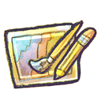

Learn About Paint!
The Different Types of Paint
Personally, my go-to paint is acrylic, but I do love to dive into something new once in a while! It can be hard to start when there are so many options and so many directions to go with them. So, I would love to share some of my own experience and understanding of some different types of paint. I used acrylic first, it's one of the best beginner paints, along with watercolor. They are both pretty forgiving, and if mistakes are made, they can be either covered or worked with. The idea is to keep the mindset of just having fun and creating something that will also be enjoyable during the process. Oil and gouache, in my opinion, require somewhat of a more advanced knowledge of paint, oil especially. Gouache is also relatively forgiving, it's sort of in between acrylic and watercolor in the sense of consistency and use. However, it is best used when there are learned techniques to be applied while painting with it. Oil is likely the most forgiving, since it stays wet longer for better blending and fixing mistakes, but it also requires a lot of work, knowledge, and technique to get the best results. Since oil can't mix with water, there are more materials that go into oil painting. It usually takes more time and patience as well, but the end result can be absolutely breathtaking. There are so many possibilities with practice and understanding when it comes to paint!
